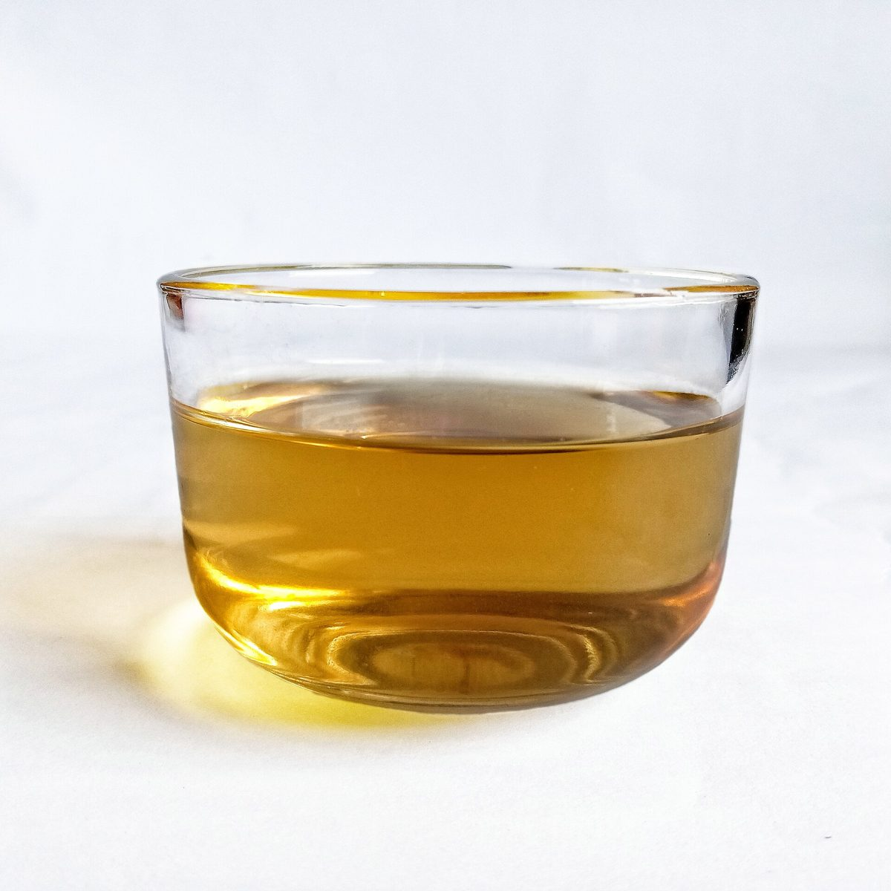

メニュー
メニュー
メニューと価格は準備中です。確認でき次第、こちらに掲載します。
- --
メニュー
準備中 - --
価格
準備中 - --
ご予約
準備中
下の写真は飲み物まわりの雰囲気を伝えるためのフリー素材で、お店で提供しているものではありません。提供メニューを示すものでもありません。



メニュー
メニューと価格は準備中です。確認でき次第、こちらに掲載します。
メニュー
準備中価格
準備中ご予約
準備中下の写真は飲み物まわりの雰囲気を伝えるためのフリー素材で、お店で提供しているものではありません。提供メニューを示すものでもありません。
